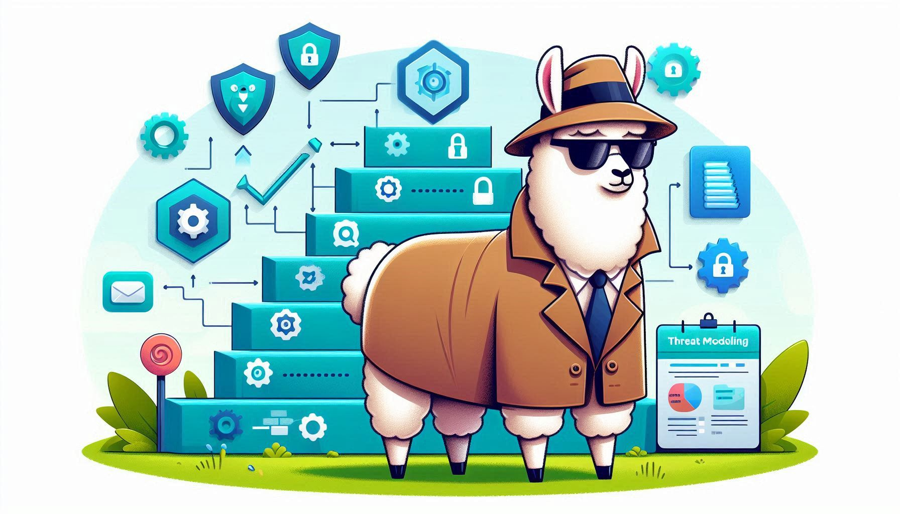

- The Overlooked Value of Threat Modeling
- Threat Modeling is good, but how?
- Begin with Threat Modeling Diagram
- Threat Modeling Frameworks
- Navigating DevSecOps with Maturity Models
- Implementing a Multistage Approach to DevSecOps Transformation
- Shift left, Stay right, Do right
- Conclusion

In the fast-evolving landscape of software development, DevSecOps has become a vital framework for integrating security practices into the DevOps process. Yet, many organizations fall into the trap of overemphasizing tooling while neglecting essential organic capabilities like threat modeling, which are crucial for a strong security posture. This blog post delves into the significance of threat modeling in DevSecOps and presents various maturity models to help organizations strengthen their security measures.
The Overlooked Value of Threat Modeling
Threat modeling is a fundamental capability that is critical for identifying potential security threats early in the software development lifecycle (SDLC). It entails a systematic analysis of potential security vulnerabilities and equips the team to address these issues proactively. Despite its significance, threat modeling is frequently overshadowed by the appeal of automated tools that offer quick solutions and seamless integration into the CI/CD pipeline.
The reality is that automated tools, while valuable, cannot replace the nuanced understanding of security risks that threat modeling provides. It requires human insight to anticipate the tactics, techniques, and procedures adversaries might use to compromise a system. By integrating threat modeling into the DevSecOps process, organizations can ensure that security considerations are embedded in the design and architecture of their applications, rather than being an afterthought.
Threat Modeling is good, but how?
Threat modeling can present challenges, but with a structured approach, it becomes more manageable. Start by understanding what threat modeling entails: it is the process of identifying, assessing, and addressing potential threats to your system. It’s crucial to begin early in the development lifecycle, integrating threat modeling from the outset. Engage diverse stakeholders, including those from security, development, and operations, to gain a comprehensive view of the system and potential threats.
Understanding the business context is equally important, as it enables you to align the threat modeling process with your organization’s objectives, risk appetite, and the value of its assets.
🔑 Key Takeaways for Effective Threat Modeling
- Start early in the development lifecycle
- Engage diverse stakeholders (security, development, operations)
- Align with business objectives and risk appetite
- Use structured methodologies (STRIDE, PASTA)
- Continuously review and update your threat models
Begin with Threat Modeling Diagram
A threat model diagram is a visual representation used to identify potential security threats within an application and determine their mitigations. It typically includes elements such as processes, data stores, actors, data flows, and trust boundaries.
To draw a threat model diagram, start by identifying the system’s assets, which include data, components, and processes that need protection. Then, define the potential threats to these assets, such as unauthorized access or data leaks. Next, create a Data Flow Diagram (DFD) to visualize how data moves through the system, highlighting points where threats could occur. Finally, analyze the diagram to identify security controls that can mitigate the identified threats.
While threat model diagrams can be created with pen and paper, there are tools available that can assist in carrying out threat modeling effectively.
STRIDE/PASTA] E --> F[Assess Impact & Likelihood] F --> G[Prioritize Threats] G --> H[Define Mitigations] H --> I[Implement Controls] I --> J[Monitor & Review] J --> |Continuous Process| B style A fill:#4CAF50,stroke:#333,stroke-width:2px,color:#fff style H fill:#2196F3,stroke:#333,stroke-width:2px,color:#fff style J fill:#FF9800,stroke:#333,stroke-width:2px,color:#fff
Threat Modeling Frameworks
Following a structured methodology, such as STRIDE or PASTA, can provide a clear and simple framework for identifying and analyzing threats. Identify your assets and the potential attack vectors that could be exploited by adversaries.
Assess the impact and likelihood of each identified threat to prioritize your mitigation strategies effectively. This prioritization helps in focusing efforts on the most critical areas that could impact your business. It’s also important to continuously review and update the threat model to reflect changes in the system or the threat landscape.
⚠️ Threat Modeling is an Ongoing Process
Threat modeling is not a one-time activity but an ongoing process that evolves with your system and the surrounding threat environment. Regular reviews are essential as new threats emerge and systems change.
By adopting these best practices and maintaining a proactive stance, you can overcome the difficulties associated with threat modeling and effectively secure your systems against potential threats.
Additionally, threat modeling itself is not a tool; rather, it’s a structured approach for identifying and prioritizing potential threats to a system. However, tools like AWS Threat Composer can aid in the analysis and enhance the threat modeling process. AWS Threat Composer provides examples for both straightforward internet applications and more complex ML operations (MLOps), all integrated with OWASP guidelines.
Navigating DevSecOps with Maturity Models
Maturity models serve as roadmaps for organizations to assess their current DevSecOps practices and chart a path towards more advanced stages of security integration. One such framework is the OWASP DevSecOps Maturity Model (DSOMM), which outlines security measures that can be applied within DevOps strategies and prioritized accordingly. The DSOMM helps organizations identify gaps in their security practices and provides a structured approach to enhance their DevSecOps initiatives.
Implementing a Multistage Approach to DevSecOps Transformation
The implementation of DevSecOps is not a one-size-fits-all solution; it requires a tailored approach that considers the unique needs and goals of each organization. A multistage approach to DevSecOps transformation allows organizations to evaluate their progress and maturity during the implementation process. This approach typically includes stages such as initial adoption, automation of security testing, and continuous improvement, each with specific goals and practices to be implemented.
Shift left, Stay right, Do right
In the realm of DevSecOps, the concepts of “shift left,” “stay right,” and “do right” encapsulate a comprehensive approach to integrating security throughout the software development lifecycle. “Shift left” refers to the practice of incorporating security measures early in the development process, rather than as an afterthought. This proactive stance ensures that security considerations are an integral part of the design and development phases, leading to more secure outcomes from the outset. It’s about embedding security into the developer’s workflow and making it a shared responsibility across the team, rather than relegating it to a separate phase or a specific group of security professionals.
“Stay right,” on the other hand, emphasizes the importance of continuous security practices during the operational phase of the software lifecycle. It involves monitoring, protecting, and responding to security threats in real-time, ensuring that security measures are always up-to-date and effective against evolving threats. This approach recognizes that security is not a one-time event but a continuous process that requires vigilance and adaptability as the software is deployed and utilized in production environments.
Lastly, “do right” in DevSecOps is a guiding principle that underlines the ethical responsibility of all stakeholders to adhere to best practices in security. It’s a commitment to doing what is necessary to protect data, respect privacy, and ensure the integrity of the software. This includes staying informed about the latest security trends, complying with regulations, and fostering a culture of security within the organization.
Together, these principles form a robust framework for integrating security into every stage of the software development and deployment process, aligning with the overarching goal of DevSecOps to build secure software rapidly and efficiently without compromising on quality or performance. By shifting left, staying right, and doing right, organizations can achieve a balance between speed, functionality, and security, which is crucial in today’s fast-paced and threat-laden digital landscape. is crucial in today’s fast-paced and threat-laden digital landscape.
Conclusion
DevSecOps is more than just a set of tools; it is a culture that requires a balance between automation and organic capabilities like threat modeling. Maturity models provide a valuable framework for organizations to systematically improve their security practices within the DevOps pipeline. By recognizing the importance of threat modeling and utilizing maturity models, organizations can move beyond tool-centric views and develop a comprehensive, resilient security strategy that is woven into the fabric of their software development processes.
For those interested in further exploring the intricacies of DevSecOps and threat modeling, additional resources and detailed methodologies can be found through the OWASP Foundation and other industry experts dedicated to enhancing application security.